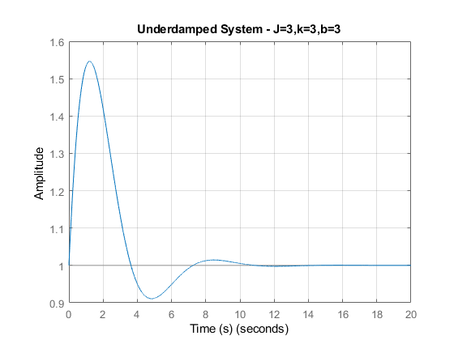
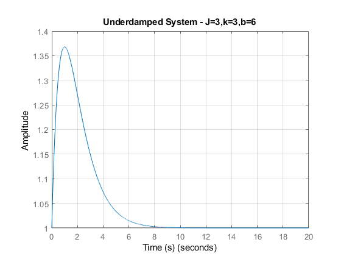
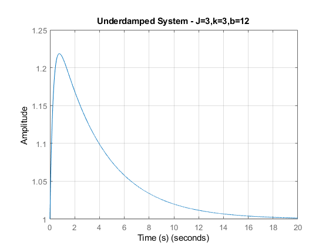
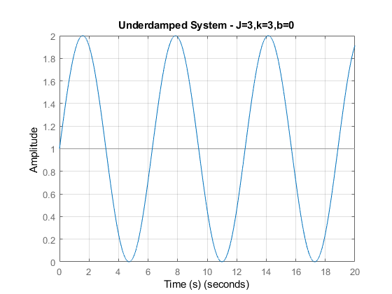
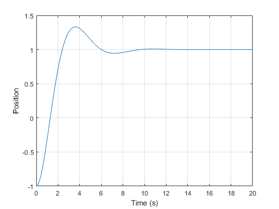

Contents
Problem Set 5
clear all close all
Problem 1 MATLAB
System Constants
k = 3; J = 3; B = [3,6,12,0]; % Under, critically,over,undamped K = 1; % Calcs Omega_n = sqrt(k/J); Zeta = B./(2*sqrt(k*J)); Numer = K; Denom = [1./Omega_n^2,2.*Zeta(1)/Omega_n,1;... 1./Omega_n^2,2.*Zeta(2)/Omega_n,1;... 1./Omega_n^2,2.*Zeta(3)/Omega_n,1;... 1./Omega_n^2,2.*Zeta(4)/Omega_n,1]; TF1 = tf(Numer,Denom(1,:)); SS1 = ss(TF1); TF2 = tf(Numer,Denom(2,:)); SS2 = ss(TF2); TF3 = tf(Numer,Denom(3,:)); SS3 = ss(TF3); TF4 = tf(Numer,Denom(4,:)); SS4 = ss(TF4); % Vectors t = 0:.001:20; u = ones(1,length(t)); figure(1) lsim(SS1,u,t,[1 1]) grid title('Underdamped System - J=3,k=3,b=3') ylabel('Amplitude') xlabel('Time (s)') figure(2) lsim(SS2,u,t,[1 1]) grid title('Underdamped System - J=3,k=3,b=6') ylabel('Amplitude') xlabel('Time (s)') figure(3) lsim(SS3,u,t,[1 1]) grid title('Underdamped System - J=3,k=3,b=12') ylabel('Amplitude') xlabel('Time (s)') figure(4) lsim(SS4,u,t,[1 1]) grid title('Underdamped System - J=3,k=3,b=0') ylabel('Amplitude') xlabel('Time (s)')   
Problem 3
clear all % Constants J = 3; K = 3; B = 3; % Time stuff t_i = 0; t_f = 20; dt = 0.01; step = t_f/dt; % State space vars A = [0,1;-K/J,-B/J]; B = [0;K/J]; C = [1,0;0,1]; D = [0;0]; x_0 = [-1;0]; u = 1; x_dot = A*x_0 + B*u; for t = 1:step x_0 = x_dot*dt + x_0; x_dot = A*x_0 + B*u; y(t) = x_0(1); end time = linspace(0,step*dt,step); figure(5) plot(time,y) grid on xlabel('Time (s)') ylabel('Position')